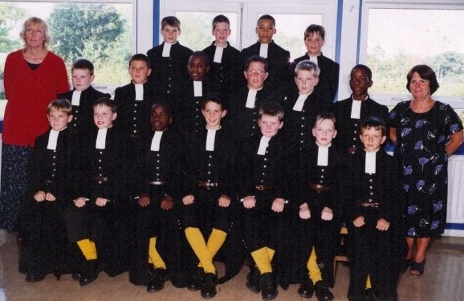
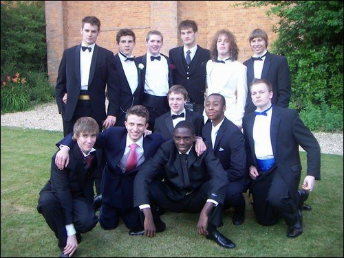
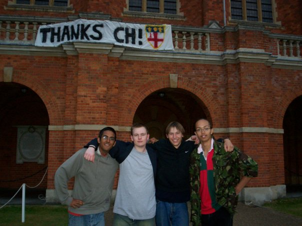
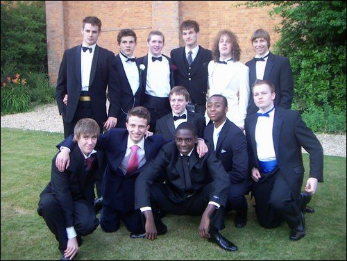
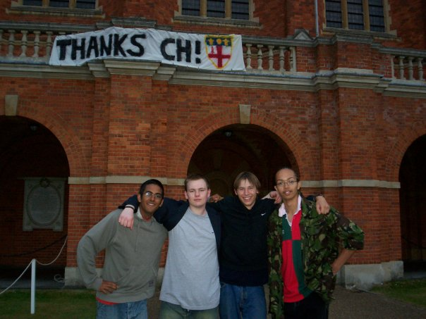
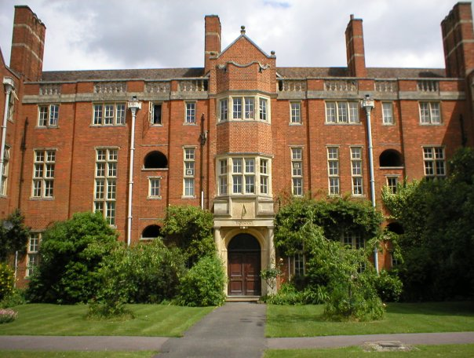
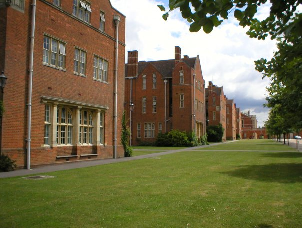
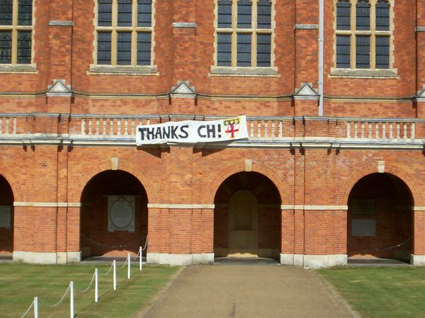

Secondary Education
Secondary education at a boarding school: Christ's Hospital (Independant / Public School). Scholarship / Presentee of: The Worshipful Company of Carmen
Overview of my time at Christ's Hosital

As I reflect on my time at Christ's Hospital, a renowned boarding school nestled in the heart of West Sussex in the United Kingdom, a wave of nostalgia and positve memories wash over me. The years I spent within its historic walls were some of the most formative and enjoyable of my life.
One of the highlights of my time at Christ's Hospital was my involvement in sports. I developed a deep passion for rugby, spending countless hours on the field honing my skills, learning teamwork, and competing with my fellow students. The camaraderie and sense of belonging that came from being a part of a sports team was unparalleled, and I cherished every moment of it. Towards the end of my time at the school I was proud to represent my school on the 2nd XV team and I was even able to represent the school on the 1st XV team a few times, fantastic!
Another sport that captivated me was fives, a game similar to squash but with its own unique rules and techniques. I relished the fast-paced nature of the game, the strategic moves, and the adrenaline rush that came with each rally. It was a sport that required skill, dexterity, agility, and mental focus, and I was proud to represent my school in fives competitions and I kept playing fives when I went to university.
Academically, Christ's Hospital pushed me to reach my full potential. I was determined to excel, and my hard work paid off as at the age of 16 I was ranked in the top 10 of my year for the highest GCSE results in the school. The rigorous curriculum, expert teachers, and stimulating discussions in the classroom challenged me to think critically, broaden my horizons, and develop a thirst for knowledge, especially in languages and sciences, that continues to drive me to this day.
 The success I enjoyed at GCSE level paved the way for my A-levels, where I continued to excel focusing on: Maths, Further Maths, Physics, Chemistry, and English. The support and guidance of my teachers, as well as the nurturing environment of Christ's Hospital, empowered me to achieve excellent grades and lay the foundation for my future academic endeavors.
With my stellar academic performance, I was accepted into Durham University to study General Engineering. The solid foundation and strong work ethic instilled in me at Christ's Hospital set me up for success in higher education and beyond and I was so well prepared for university that I received early praise from my tutor at college, in the first term, for being one of the brightest pupils in the tutorial group.
But beyond academics and sports, Christ's Hospital provided me with a sense of community and also lifelong friendships. The bonds forged with fellow students from diverse backgrounds, who shared similar passions and aspirations, were invaluable. The boarding experience fostered independence, resilience, and adaptability, as I learned to navigate the challenges of living away from home and building a support system among my peers.
 In conclusion, my experiences at Christ's Hospital were nothing short of extraordinary. From the thrill of playing rugby and fives and going on expeditions, camps and exercises all over the country with the Duke of Edinburgh award scheme and the Cadets (CCF), to achieving academic excellence, to forming lasting friendships, the school shaped me into the person I am today. I will forever cherish the memories of my time there, and I am grateful for the opportunities and education it provided me, which have laid the foundation for a successful future.
One of the highlights of my time at Christ's Hospital was my involvement in sports. I developed a deep passion for rugby, spending countless hours on the field honing my skills, learning teamwork, and competing with my fellow students. The camaraderie and sense of belonging that came from being a part of a sports team was unparalleled, and I cherished every moment of it. Towards the end of my time at the school I was proud to represent my school on the 2nd XV team and I was even able to represent the school on the 1st XV team a few times, fantastic!
Another sport that captivated me was fives, a game similar to squash but with its own unique rules and techniques. I relished the fast-paced nature of the game, the strategic moves, and the adrenaline rush that came with each rally. It was a sport that required skill, dexterity, agility, and mental focus, and I was proud to represent my school in fives competitions and I kept playing fives when I went to university.
Academically, Christ's Hospital pushed me to reach my full potential. I was determined to excel, and my hard work paid off as at the age of 16 I was ranked in the top 10 of my year for the highest GCSE results in the school. The rigorous curriculum, expert teachers, and stimulating discussions in the classroom challenged me to think critically, broaden my horizons, and develop a thirst for knowledge, especially in languages and sciences, that continues to drive me to this day.
 The success I enjoyed at GCSE level paved the way for my A-levels, where I continued to excel focusing on: Maths, Further Maths, Physics, Chemistry, and English. The support and guidance of my teachers, as well as the nurturing environment of Christ's Hospital, empowered me to achieve excellent grades and lay the foundation for my future academic endeavors.
With my stellar academic performance, I was accepted into Durham University to study General Engineering. The solid foundation and strong work ethic instilled in me at Christ's Hospital set me up for success in higher education and beyond and I was so well prepared for university that I received early praise from my tutor at college, in the first term, for being one of the brightest pupils in the tutorial group.
But beyond academics and sports, Christ's Hospital provided me with a sense of community and also lifelong friendships. The bonds forged with fellow students from diverse backgrounds, who shared similar passions and aspirations, were invaluable. The boarding experience fostered independence, resilience, and adaptability, as I learned to navigate the challenges of living away from home and building a support system among my peers.
 In conclusion, my experiences at Christ's Hospital were nothing short of extraordinary. From the thrill of playing rugby and fives and going on expeditions, camps and exercises all over the country with the Duke of Edinburgh award scheme and the Cadets (CCF), to achieving academic excellence, to forming lasting friendships, the school shaped me into the person I am today. I will forever cherish the memories of my time there, and I am grateful for the opportunities and education it provided me, which have laid the foundation for a successful future.
Image Gallery

My beloved boarding house and home for most of my time at the School: Thornton

A view down the avenue at the school.

Grecian's tradition: a prank on campus: Banner Drop in the main quad